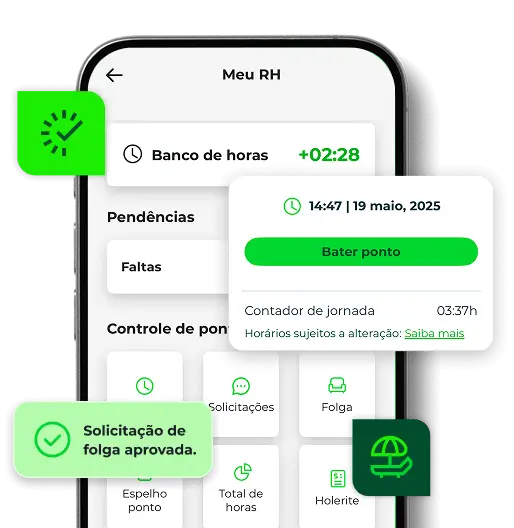

Registro de ponto digital
Marcação via celular, QR Code, reconhecimento facial ou web.
Gestão de jornada para equipes presenciais, híbridas e remotas com menos erros, mais transparência e fechamento de folha mais rápido.

Ponto digital. Pessoas conectadas.FUNCIONALIDADES
Marcação via celular, QR Code, reconhecimento facial ou web.
Acompanhe entradas, saídas e jornadas instantaneamente.
Dados organizados para gestão estratégica.
Automatiza cálculos de horas extras e faltas.
Controle de colaboradores em um só lugar.
Funciona para equipes externas e em trabalho remoto.
BENEFÍCIOS DO VR GENTE
DIFERENCIAIS
PERGUNTAS FREQUENTES
Tire suas dúvidas sobre o controle de ponto digital e gestão de pessoas.
É uma solução completa de gestão de pessoas e controle de ponto digital que automatiza processos do RH e melhora a organização da empresa.
Sim. O controle de ponto digital segue a Portaria 671, garantindo segurança jurídica e conformidade com a legislação trabalhista.
Podem registrar o ponto via celular, QR Code, reconhecimento facial ou sistema web, com praticidade e segurança.
Sim. A solução funciona para equipes presenciais, híbridas ou em trabalho remoto.
Sim. Automatiza processos e reduz falhas humanas no controle da jornada e no fechamento da folha.
Sim. Permite automatizar cálculos de horas extras, faltas e adicionais.
Não. A plataforma é intuitiva, fácil de implementar e permite uma rápida adaptação da equipe.
Redução de custos, mais produtividade, menos burocracia, segurança jurídica e gestão 100% digital.